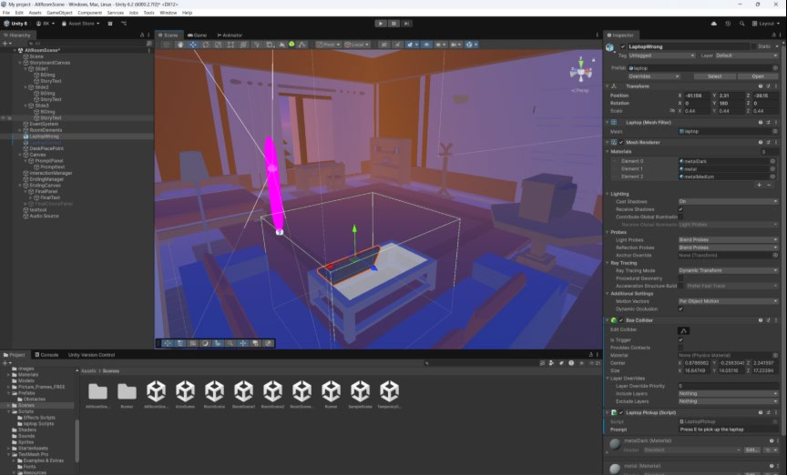
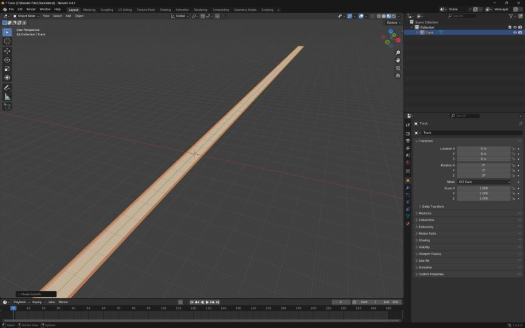
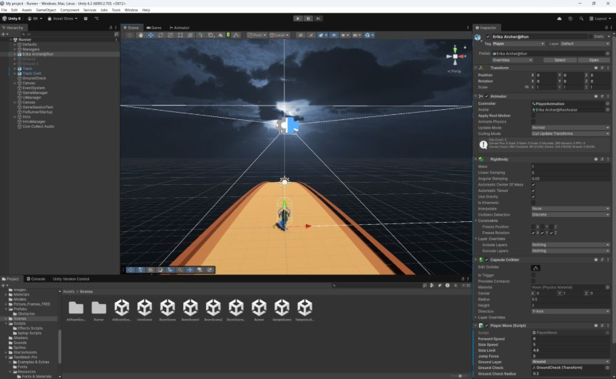

Echoes of Home
A low-poly memory room built from the homes I've actually lived in. No dialogue carries the emotional weight here. The lighting, the objects, and one small symbolic act do all of it instead.
Watch the full experience here. It's short by design, the pacing is the point.
This project expands an earlier idea: a memory room built from the homes I lived in. It now moves through multiple connected spaces, story prompts, and a playable mini-game, with an alternate room added to strengthen the emotional arc. The runner sequence was rebuilt around a custom-modelled track and a coin-based reward structure. The whole thing is built on one design instinct: gentle storytelling, carried by small, readable interactions rather than exposition.
The approach centred on warmth, clarity, and emotional consistency. A low-poly style reduces visual noise so the memories feel soft rather than sharp. Lighting was adjusted repeatedly to land on a late-afternoon glow that supports the nostalgic tone, and slides between scenes give the player a breath before each story beat rather than cutting straight in.
The experience moves through seven connected beats, each one handing off to the next.
The project runs on a modular scene-based structure. A Character Controller handles movement, with a separate script for camera look. Interactions use trigger zones and tags. The runner relies on procedural obstacle spawning with a probability weight on each obstacle type, so the track never feels identical twice, plus a coin manager, collision pickups, and UI overlays on a custom-modelled track. All scene transitions are asynchronous to avoid stutters, and a single manager controls menus, slides, and in-game screens. Room scenes use baked lighting for performance; the runner uses mixed lighting to support movement.




The trickiest part of development was the handoff between the room scene and the runner scene, which broke repeatedly before it stabilised. A short delay was added so audio could fade out naturally before the next ambient layer faded in, and most of the underlying issue traced back to how Unity handles multiple audio listeners and scene activation order.
Testing was informal: three short sessions, think-aloud, with a small group of peers moving from the intro scene through to the alternate room. Some issues showed up immediately. Several players walked around the room for a while before noticing the phone, which meant the interaction hotspot needed more visual presence. A few story prompts were unclear enough to disrupt the emotional flow, and the runner's navigation felt difficult for some players, partly down to depth-perception issues during obstacles.
None of that took away from the part that mattered most. Every tester reacted positively on entering the alternate room, often slowing down just to look around it. Two testers specifically said the laptop task felt like a grounded moment against the intensity of the runner section just before it, and one said the experience felt personal even without knowing the full story behind it, which was the actual goal.
Changes made in response: increased the visibility of the phone interaction zone, replaced the coin pickup sound with a clearer and louder cue (one tester genuinely thought it wasn't working), rewrote and re-paced the story slides, refined the runner's obstacle spacing and collision sizes, and shifted the typeface toward something softer and more nostalgic.
This project taught me more about patience and iteration than any technical lesson did. Balancing emotion against gameplay pacing took far longer than expected, and the room-to-runner transition broke enough times that a teammate had to help me track down the actual cause, which was a good reminder that asking for help early saves time later. The more personal the underlying story became, the more pressure I felt to represent it properly rather than just functionally. I'd still like to add more memory objects with their own small unlockable moments, build an artifact gallery so players can revisit what they've uncovered, and refine the lighting across scenes for a more consistent atmosphere overall.